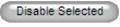
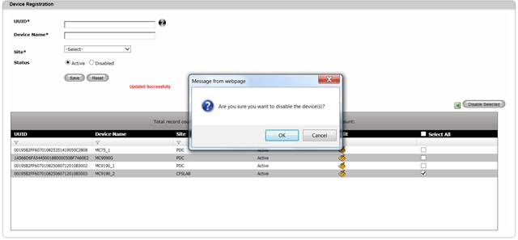
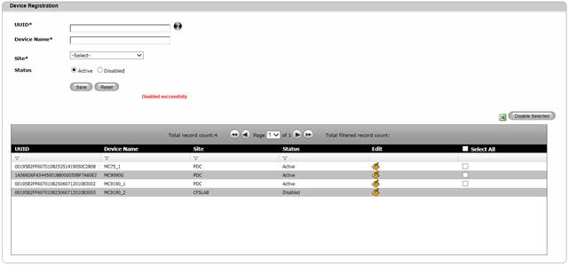

Disable Device
One can disable a device from further using the application. Once the device is disabled, one will not be able to perform any synchronization with the back-end. To disable a Device,
1. Navigate to Masters>>Register Device on the DCTrackMobileWeb menu bar.
2. On the Register Device screen, tick on the check box corresponding to the Register Device to be deleted from the list.
3.
Click Disable Selected

You will see the confirmation message window.

Figure 66: Register Device Screen – Disable Confirmation Message
Can I select multiple devices for disable?
Yes. Simply tick on the check box corresponding to the Register Device you would like to disable before clicking on the Disable Selected button. You can also click the Select All check box to select all items in the list for disable.
4. Click OK  button to proceed or click
Cancel
button to proceed or click
Cancel  button to disregard
operation.
button to disregard
operation.
5. Upon disable, you will see the successful disabled message and the disabled device will exist in the list which can be later activated using Edit functionality.
6. Once a device is disabled, sync functionality in that device will not work.

Figure 67: Register Device Screen – Successful disable